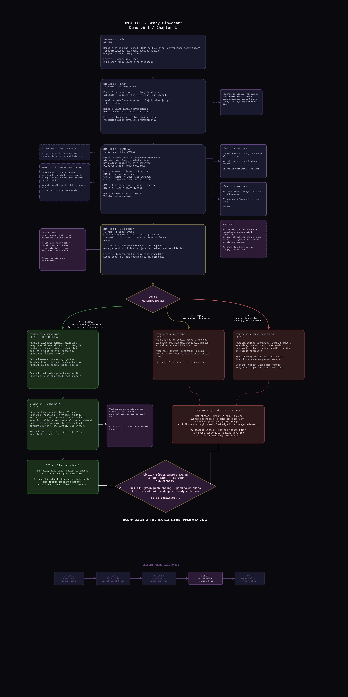
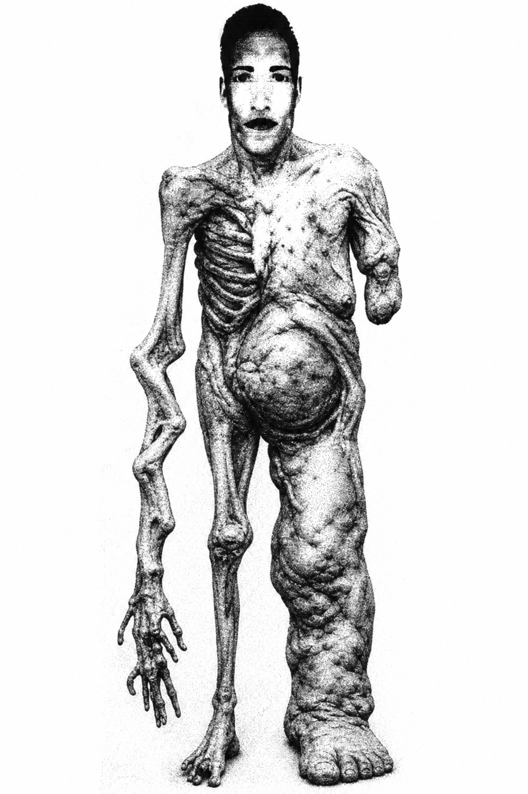

1. Origins and moodboard
OPEN FEED started from a feeling I could not name at first: late-night browsing, an old website, a public camera feed, a parking lot that is too empty. Nothing jumps out at you. Something is still wrong.
Before I had a real scene list I used a moodboard and a flowchart. The board pinned down PS1 low-poly, CRT and VHS noise, 90s web design, and that watched-from-afar feeling. The chart was me checking whether menu, store, drive, house, and desk could be one night instead of five separate tests.


2. High concept
OPEN FEED is first-person horror built on public camera feeds, ordinary late-night places, and the sense that watching is not passive anymore. You go from a supermarket to a night drive, into a house, then to a monitor where the in-game OpenFeed site is part of the plot.
I did not want a game that proves every thirty seconds that it is horror. I wanted something that sits with you: empty frames, broken signals, silence in a lot. Fear is partly that you cannot step into the feed and fix what you see.
3. Design principles
Whenever a scene started to feel like a generic horror set, I came back to these:
- Ordinary places first. Aisles and camera thumbnails should feel off before anything announces itself. That took a lot of store and website iteration.
- Systems that feel neglected, not gamey. Feeds and UI are hand-built, but they should read like something someone shipped years ago and forgot to take offline.
- Low fidelity on purpose. PSX-ish geometry, noisy video, hard cuts to black, ugly tables. Not placeholders. I never planned a polish pass for this course build.
- Silence counts. Some moments I like best almost refuse to escalate. Standing still in the car or at the monitor is allowed to be uncomfortable.
- One continuous night. Fades, subtitles, and the menu typewriter stitch Unity scenes into one flow, not a folder of demos.
4. Genre and atmosphere
First-person horror, mostly linear: walk, read, click, listen. The monitor runs a real site in-engine (Unity WebView). I kept the scope narrow so I could spend time on rhythm and sound instead of a sandbox.
The mood stayed surveillance, paranoia, loneliness, and guilt about watching something that is technically public but still feels wrong. You are not supposed to be on that page this long. The game keeps saying that without spelling it out.
Visually: PS1-adjacent silhouettes, CRT and VHS junk, 90s web, broken UI. You observe, connect what you can, listen to radio and warnings, and decide whether to keep watching.
5. Player experience
Half the time you are a distant observer on feeds. Then the story puts you in rooms where that distance is gone.
| Action | Where | Role |
|---|---|---|
| First-person exploration | Store, drive, house | Scene controllers; same player fantasy throughout. |
| Read prompts and subtitles | Menu to store, radio, global fades | GameFlowManager owns timing and copy. |
| Interact (raycast / click) | Shelves, cart, cashier, house props | e.g. ShelfPickupClicker, HouseInteractionClicker. |
| Shopping sequence | supermarket2 | SupermarketTaskController: items, checkout, exit. |
| Radio / listening | ForestDrive | Spatial audio; subtitles on the cutscene. |
| Type home | ForestDrive | DrivingCarInteriorInteraction → GameFlowManager loads house. |
| Hide, fail, retry | house | Bed hide (shipping spot); YOU WERE SEEN; TV checkpoint. |
| Browse diegetic site | Desk / monitor | React build in StreamingAssets; WebViewController. |
6. Scene flow and build path
Early on I drew a full flowchart so I could see which scenes were real and how the player would move. It still includes the desk layer even though the May build takes a shorter path through the house first.

assets/flowchart_image.jpg). Full intended route vs. shipped chain below.Shipped May 19 build via GameFlowManager:
MainMenu → supermarket2 → ForestDrive → house
Menu and typewriter intro, late-night store and checkout, forest drive with radio, then type home for the house. MonitorSite and the desk monitor live inside the house beat. The separate Desk scene stays in the repo but is excluded from auto flow so old maps do not load by accident.
I reworked transitions many times because pacing is where the game lives. Store to drive now fades to black, shows inner-monologue text on black, then eases into the car. One night continuing, not a level swap. GameFlowManager persists (DontDestroyOnLoad) so typing home survives scene unloads.
supermarket (legacy), MainArea, and standalone Desk sit in FlowExcludedScenes. That let me keep experimenting without breaking the path I was grading against.
7. Scene-by-scene breakdown
What each scene is for, what you do there, the scripts I leaned on, how you leave, and where it landed on ship day.
7.1 Main menu
| Purpose | Set tone. Starting should feel like opening a story, not a test map. |
|---|---|
| Player goals | Start the game. Skip paths exist for iteration when the intro drags. |
| Systems | MainMenuUI when present; else GameFlowManager overlay text. |
| Transition | Loads supermarket2 with black hold and typewriter timings in GameFlowManager. |
| Status | Shipped. Final-day pass on black-screen intro pacing (no skip in release flow). |
7.2 Store and parking (supermarket2)
| Purpose | Late-hour retail before the drive. A lot of first impression lives here. |
|---|---|
| Player goals | Shopping beat, checkout, head toward ForestDrive. |
| Systems | SupermarketTaskController, cart, cashier, shelf pickup, ambience, snowfall; SupermarketDriveInIntro or runtime spawn. |
| Transition | GameFlowManager fade and supermarketToForestDriveDelay. |
| Status | Shipped: three-item cap, checkout, smoother fade into ForestDrive. |

7.3 Forest drive (ForestDrive)
| Purpose | Isolation in the car. Radio is the voice. Bridge from public space to the house. Teacher feedback kept pushing me to protect this section; it is not just travel time. |
|---|---|
| Player goals | Listen to radio; when ready, type home → GameFlowManager.BeginDriveHomeToHouse(). |
| Systems | DrivingCarInteriorInteraction (crosshair, radio raycast); CutscenePlayer subtitles. |
| Transition | Driving cutscene; async house load; fade cleanup on entry if needed. |
| Status | Shipped. Type home for house; radio and subtitles on the cutscene. |

7.4 House (house)
| Purpose | Domestic pressure: MonitorSite on the desk, TV / EAS, hide beat, escape. Most late devlog entries are this room. |
|---|---|
| Player goals | When the sequence starts: move, hide under the bed (first shipping volume), survive, or fail into YOU WERE SEEN and retry at the TV. |
| Systems | HouseInteractionClicker, doors, HouseCreaturePathRecorder routes (window1, housepath, window2), VHS failure. |
| Transition | From drive via GameFlowManager; after survive or fail, escape to car and ending video, then main menu. |
| Status | Shipped: MonitorSite collapse, EAS, hide / YOU WERE SEEN / retry, menu after ending video. |


Subject profile (house antagonist)
The figure at the window
Tall, fragmented, limping walk. The still is reference art; in-engine work was footsteps, the door threshold, and whispers placed in world space so he feels in the room with you, not on a texture.

Assets/Textures/posters/person/creature.png (rough on purpose; matches the half-real look).I walk the route in Play Mode, record it, he replays the same beats. Staged theatre, not emergent AI hunting.
Recorded paths through the house (window1, housepath, window2) with footsteps, a threshold creak, and positional whispers. After TV tells you to leave, seeing him at the driveway window starts the countdown; prompt is FIND A PLACE TO HIDE. NOW. Opening the front door during that beat is an authored mistake and uses the same fail pipeline.
Fail: held frame, VHS, YOU WERE SEEN, back to TV checkpoint. Survive hide and you can continue toward the car.
- Source asset
Fragmented_Form_biped; runtime cleanup for scale and materials.- Direction
HouseCreaturePathRecorder: walk it in-editor; creature repeats so movement matches the layout.- Why bother
- Turns feed dread into someone in the same room as the player.
7.5 Desk and monitor layer
| Purpose | OpenFeed camera index in a real browser. Ugly and believable, like a forgotten public tool. |
|---|---|
| Player goals | Browse feeds, forum and messenger beats, survive the site dying after the glitch. |
| Systems | React / Vite in StreamingAssets; WebViewController; tabs including Westfield Herald. |
| Transition | Inside house in ship build; standalone Desk for tooling, excluded from auto flow. |
| Status | Shipped: offline lock, EAS on TV, final-day white-page fixes. |
.png)
8. Mechanics and rules
8.1 Global flow (GameFlowManager)
FlowExcludedScenesstops legacy or experimental maps from hijacking the shipped path.- Fades and subtitles are glue. They sell continuity between beats.
- Ctrl+Shift+F9/F10 warps are for me only; turn off in builds you hand to someone else.
8.2 Store (SupermarketTaskController)
- Intro → collect three items → cart in range → checkout → bag → fade. Store music fades when you leave for the forest.
8.3 Driving (DrivingCarInteriorInteraction)
- Type home (per script casing) to end the drive;
GameFlowManagerloads the house.
8.4 House: playtest ruleset
- TV warning: move.
- Creature visible: hide (bed in current build).
- Hide active + open front door = authored fail (same jumpscare pipeline).
- Timeout outside: chase, scream, VHS, YOU WERE SEEN, retry at TV.
- Timeout inside: creature uses recorded interior route (no clipping through walls).
- Survive hide: continue toward car / escape layer.
Not a stealth sandbox. One short crisis where the whole house is a single bad choice. That is what I built for the May playthrough.
9. Diegetic web: OpenFeed
I did not want a beautiful or modern interface. I wanted old, ugly, believable: tables, low-res camera cards, live/offline labels, fake viewer counts, FAQ that sounds legally careful instead of honest. Thumbnails jitter so feeds feel like bad video, not marketing stills.
First I built UI in Unity canvases. HTML webview was the breakthrough: the site could grow as a real project (tools/monitor-site) and bake into StreamingAssets. May ending adds messenger, Westfield Herald tab, shell lockout after offline, and glitching inside the page so sandbox errors do not break the collapse.
10. Visual direction
URP with a PSX-adjacent read: bold silhouettes, hard edges, Metallic 0, Smoothness 0, point-filtered textures, no bloom. Mostly primitives; materials prefixed (StoreFlow_, MainMenu_, etc.) so the repo stayed searchable as it grew.
That matches the moodboard: late-90s unease and tired digital surfaces, not a PBR showcase.
11. Audio
Sound did a lot of the work, especially the drive. Radio, room tone, and silence often beat the geometry. In the house, boneaudio.mp3 peaks on the TV LEAVE NOW beat; after MonitorSite shuts down, site audio cuts completely so the collapse feels finished.
Store ambience, car cabin, creature steps and whispers, door creaks. Menu typewriter, EAS, VHS failure stings. I mixed quiet so the loud moments actually land.
12. Technology
| Area | Implementation |
|---|---|
| Engine | Unity 6000.4.0f1 |
| Rendering | Universal Render Pipeline (URP) |
| Input | Unity Input System |
| In-engine browser | WebView package; static build in StreamingAssets |
| Web authoring | React / Vite (tools/monitor-site) |
| Cinematics | Timeline; CutscenePlayer on the drive sequence |
| Editor tooling | Custom Assets/Editor/OpenFeed menus (store, driving, paths, textures, exports) |
Gameplay code under Assets/Scripts/.
13. What shipped (May 19)
One sitting: menu → store → night drive → house, MonitorSite, TV / EAS, hide or fail, escape, ending video, back to menu. That matches the last devlog entry more than any roadmap slide.
If I come back, honest next steps are repeat-play polish: more hide spots, less samey creature paths, optional shorter intro. Not five new cities for the sake of scope.
14. Lessons and loose ends
- Scope grows fast. One good idea drags five systems with it.
- WebView plus PSX shaders need a pass on a weaker PC before I promise performance.
- Recorded creature paths may feel samey on replay; any variation has to respect staging.
- Typewriter intro sets mood but will annoy some players. Shorter default later maybe.
homestill needs a clearer affordance for first-timers.- Keep the development diary and this page in sync when flow changes.
15. Appendix
15.1 Recommended capture set
- Main menu or black typewriter beat.
- Store interior or exterior at night.
- Car cabin and radio moment.
- TV / emergency broadcast beat.
- Monitor with OpenFeed in WebView.
- YOU WERE SEEN frame (if the audience should see it).
- Unity editor with OPEN FEED custom tools visible (production context).
15.2 GameFlowManager excerpt
Scene string defaults (must match Build Settings):
public string mainMenuScene = "MainMenu";
public string storeScene = "supermarket2";
public string drivingScene = "ForestDrive";
public string houseScene = "house";Scenes excluded from the shipped transition path:
static readonly string[] FlowExcludedScenes = { "supermarket", "MainArea", "Desk" };